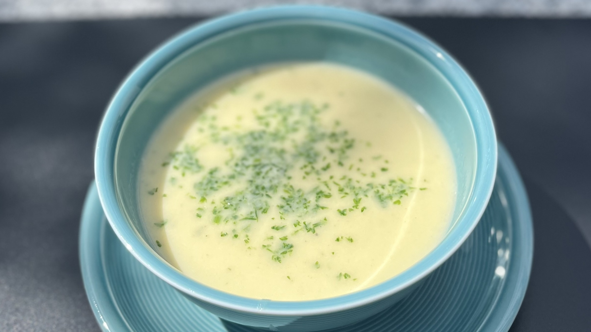

Ingredients for 5 Persons:
- 500g Potatoes
- 350g Carrots
- 1.5l Chicken or Vegetable Bouillon
- 1 Onion
- 11⁄2 tsp. Sugar
Preparation:
- Chop all your Vegetables into small chunks
- Finely chop your Onion and sear it in a deep pot
- Add the boillon
- Add potatoes and carrots and let cook until soft
- Mix using a stand mixer until homogeneous
- Serve in a bowl and garnish with fresh herbs